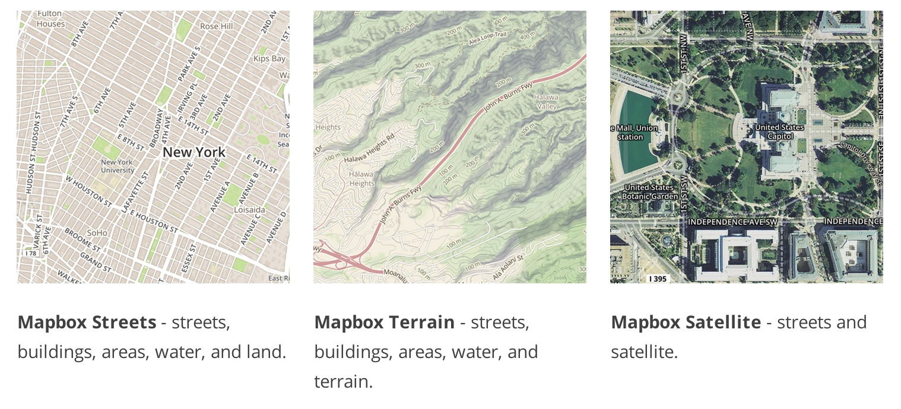
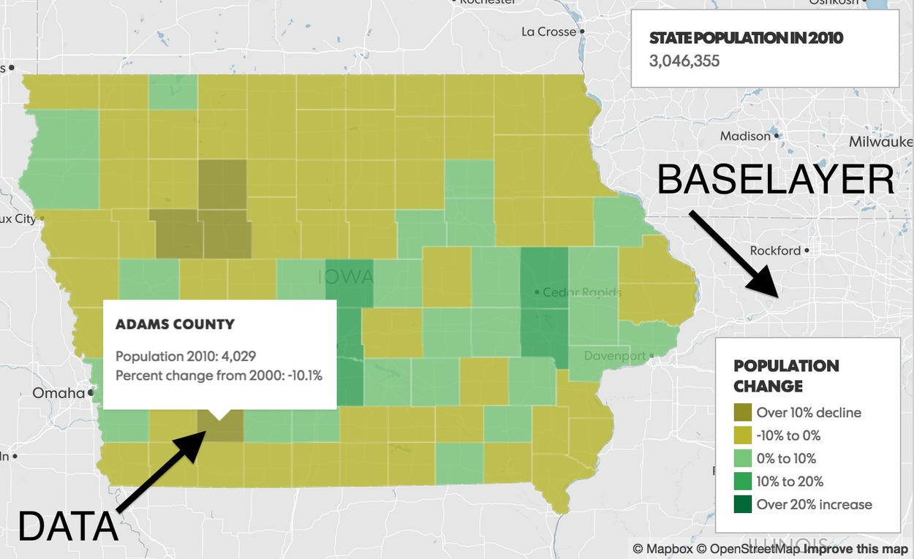
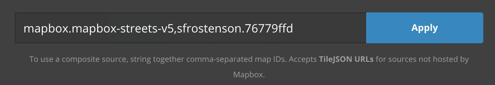

What is Mapbox?
A geographical baselayer...

Three basic baselayers at the core of Mapbox are:
When you start a new project through your mapbox account, these are the possible baselayers already available to you.
What is Mapbox?
A geographical baselayer + DATA OVERLAY

But again, What is Mapbox? It's a geographical baselayer + data. And what we're going to focus on today is the second half of the equation--data. B/c visualizing our data helps us not only tell our stories more effectively to our readers, but it can also show us insights that can inform our own reporting.
Objectives
How to build a map in Mapbox Studio or Tile Mill.
How to build the same map using Mapbox.js.
So today, we're going to learn 2 things. First, how to build a map using TileMill or Mapbox Studio.
Step One: Does Your Data Have a Geographic Field?
You need some kind of geographic field in your data to join to a shapefile or generate geojson / topojson file, etc.
FIPS code
Latitude / Longitude coordinates
Or geocode your data. Checkout geomancer from the AP.
So first things, first when identifying a data set to map, make sure there's a geographic or spatial component to it. This could be a FIPS code, if dealing w/ states or counties, lat/lon for specific points on a map, or even trying tools like AP's geomancer, to add geocoded data to your data, if you only have a city name or street address, etc.
Data Formats Recognized by Mapbox Studio & Tile Mill
csv (must contain colums w/ lat/lon coordinates)
shapefile
GeoJSON
KML
GeoTIFF
SQLite or PostGIS
Mapbox Studio and TileMill will recognize csv data, shapefiles, GeoJSON,
KML (think Google Earth/Maps products), GeoTIFF for raster/remote sensing imagery and lastly, data from spatial databases like SQLite or PostGIS. If you're going to build your map in javascript, you'll want your data as GeoJson.
Our Data Story
Unemployment rates by county for 2013
Source: Bureau Labor of Statistics
Found the raw data from 2000-2013 in an Excel file at the USDA .
Yes, getting the raw data to unemployment.geojson takes a few steps.
But don't worry, I've outlined exactly how to do it w/ minimal pain involved here .
Ok, so what data set will be using today? Unemployment rates by county for 2013, which interestingly enough I found through USDA and not BLS. Go figure.
But First, Beware!
While TileMill still works now, know that Mapbox aims to fully replace and improve upon TileMill with Mapbox Studio.
You should know that Mapbox is looking to replace and eventually stop supporting TileMill. I'll still briefly show you how you would make the map in TileMill versus, Mapbox Studio, but be warned!
Method I: Mapping in Mapbox Studio
Step One: Import our GeoJSON and Upload Data
Create a new project and select Blank source .
Click New layer and import our data.
Change your zoom level to see our data.
Click anywhere on the map.
Rename layer name unemployment . Save our project.
Upload our data to Mapbox.com.
Copy our data's Map Id .
Open Mapbox Studio and click on Projects in the lower left. Click New project button. Create a new source for our data by selecting Blank Source.
Method I: Mapping in Mapbox Studio
Step Two: Style our data
Select Projects and Styles (instead of Sources).
Click on Layers and Change source to add our data's Map Id.

Create a style sheet for our data.
Back in Mapbox Studio click on Projects in the lower left. We see our data project saved, cool. Now select Styles. We don't have any Styles! So let's select the New Project tab and select one of Mapbox's prepackaged styles. I chose Streets Classic. In addition to loading the base layer, you'll also see the CSS written in CartoCSS that styles the baselayer. You can customize these styles, however you'd like, but we won't focus on that today.
Method I: Mapping in Mapbox Studio
Our CartoCSS styles
#unemployment {
line-color: #a3a3a3;
line-width: 0.8;
polygon-opacity: 0.6;
[unemploy_3 = -99] { polygon-fill: #a3a3a3; }
[unemploy_3 >= 0.9][unemploy_3 <= 5.0] { polygon-fill: #edf8fb; }
[unemploy_3 >= 5.1][unemploy_3 <= 6.3] { polygon-fill: #b3cde3; }
[unemploy_3 >= 6.4][unemploy_3 <= 7.5] { polygon-fill: #8c96c6; }
[unemploy_3 >= 7.6][unemploy_3 <= 9.2] { polygon-fill: #8856a7; }
[unemploy_3 > 9.2] { polygon-fill: #810f7c; }
}
Copy and paste the code into your unemployment stylesheet. Save your project as unemployment-styles. Do you see any changes?
Method I: Mapping in Mapbox Studio
Adding Interactivity
Close Mapbox Studio. Navigate to the folder where you saved your styles.
Open project.yml .
Change interactivity_layer: '' to interactivity_layer: unemployment
Change template: '' to
template: |-
{{unemploy_1}}, {{unemploy_2}} Unemployment rate: {{unemploy_3}}
What is a map without interactivity? Let's close Mapbox Studio and navigate to your styles folder. It has a .tm2 extension. Unfortunately we have to quit and restart Mapbox Studio, as Studio does not yet detect changes made from other text editors dynamically.
Method I: Mapping in Mapbox Studio
Upload Project
Use unemployment-styles as name and upload to Mapbox.
Go to your Mapbox.com account and check for project under Styles.
By navigating to Settings.
Method I: Mapping in Mapbox Studio
Building A Simple HTML page
Go to https://github.com/sfrostenson/talks/blob/2015-03-nicar-mapbox/mbstudio-map/index.html
Copy and paste code into a text editor as index.hml or click raw and save as index.html. Save this file in the same folder as your unemployment.geojson.
Got Map?
Hover data works. Can zoom into an area, out of an area, etc. You've just built your first map!
Tile Mill
Luckily, for you TileMill is very similiar to Mapbox Studio. It's roughly the same process of creating a new project. We adding our data layer, unemployment.geojson and CartoCSS styles, except we don't have the intermediary steps of having to upload to Mapbox. You could even argue the process is cleaner at this stage. But remember, we don't know how much longer TileMill will be supported.
Tile Mill Hover Data
By clicking the pointed finger icon in the lower left, I can activate my unemployment layer and add my interactivity like we did in Mapbox Studio. I can even create an html legend.
So Why Not Use TileMill?
First of all, you can . I've included a tutorial at the end of the slides in Resources.
TileMill makes tiles. Mapbox Studio makes vectors. Vectors won't look fuzzy under high resolutions. Images will.
You can't customize your baselayer in TileMill. But you can in Mapbox Studio.
Method II: Mapping using Mapbox.js
Line 65 in index.html:
var unemploymentLayer = L.geoJson(unemployData, { style: style, onEachFeature: onEachFeature }).addTo(map);
Variable in unemployment.geojson:
var unemployData = {
"features": [
{
"geometry": {
"coordinates": [
[
[
-121.447540446521,
41.997168804479195
etc........
First of all, top of the script has all the same requirements as our other index.html file. Then we've got some map and legend styles and some html code that creates a Mapbox legend on our page in addition to the div for our map.
Method II: Mapping using Mapbox.js
Interactivity and Styles
var popup = L.popup();
unemploymentLayer.on('mouseover', function(e) {
e.layer.openPopup();
});
unemploymentLayer.on('mouseout', function(e) {
e.layer.closePopup();
});
The rest of our index.html is focused on assigning interactivity and styles to our map that are then referenced in the style:style and onEachFeature:onEachFeature of line 65.
Got Map?
Hover data works. Can zoom into an area, out of an area, etc. You've just built your first map!
PRO/CONS of Methods?
Mapbox Limitations?
This is when I ask you for feedback. Which method did you like better?